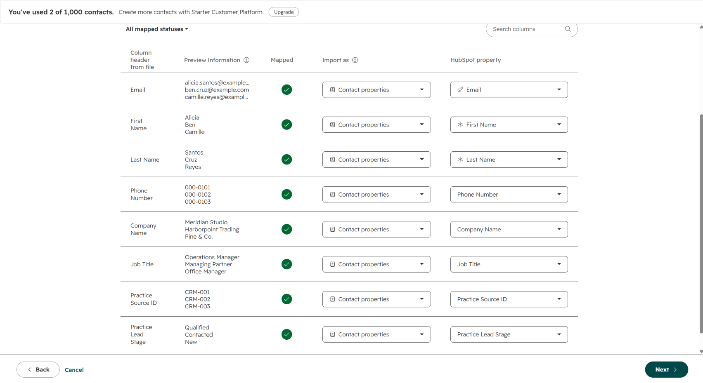
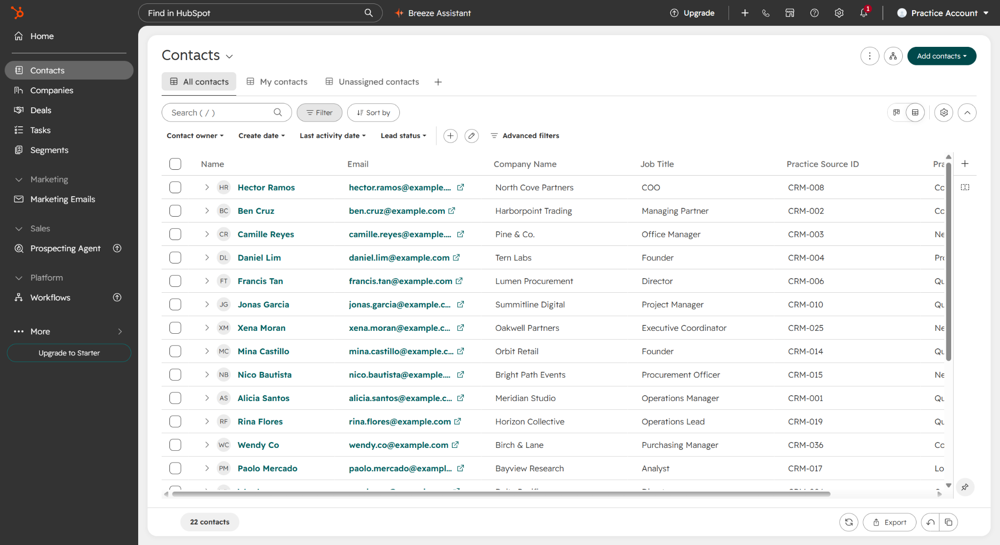

Project 03 / CRM Data Cleanup & Lead Tracking
HubSpot Contact Import
I imported the 20 contacts marked ready and mapped the contact fields, including Practice Source ID and Practice Lead Stage.
The account had two contacts before the import. The contacts view shows 22 afterward: the original two plus the 20 practice contacts.
Mapping the fields

Reviewing the imported contacts

The records needing review
I kept the 12 flagged records separate from the import-ready list. Missing emails, unclear statuses, ownership gaps, and conflicting dates remain documented for review.